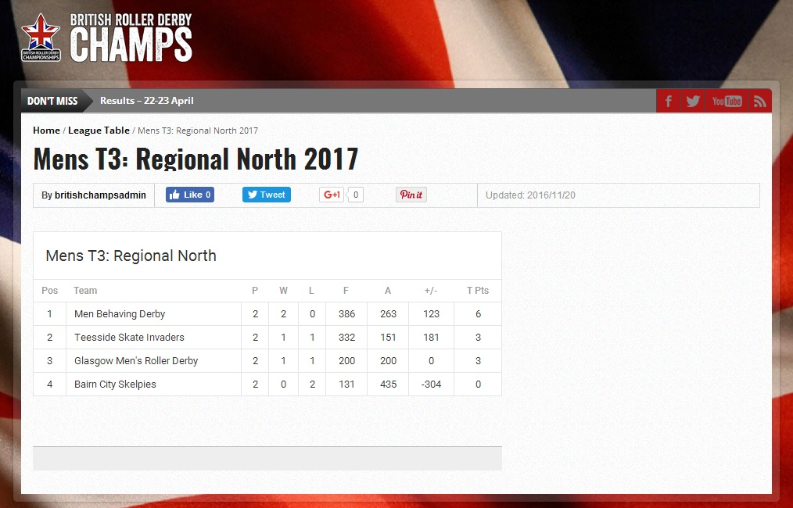
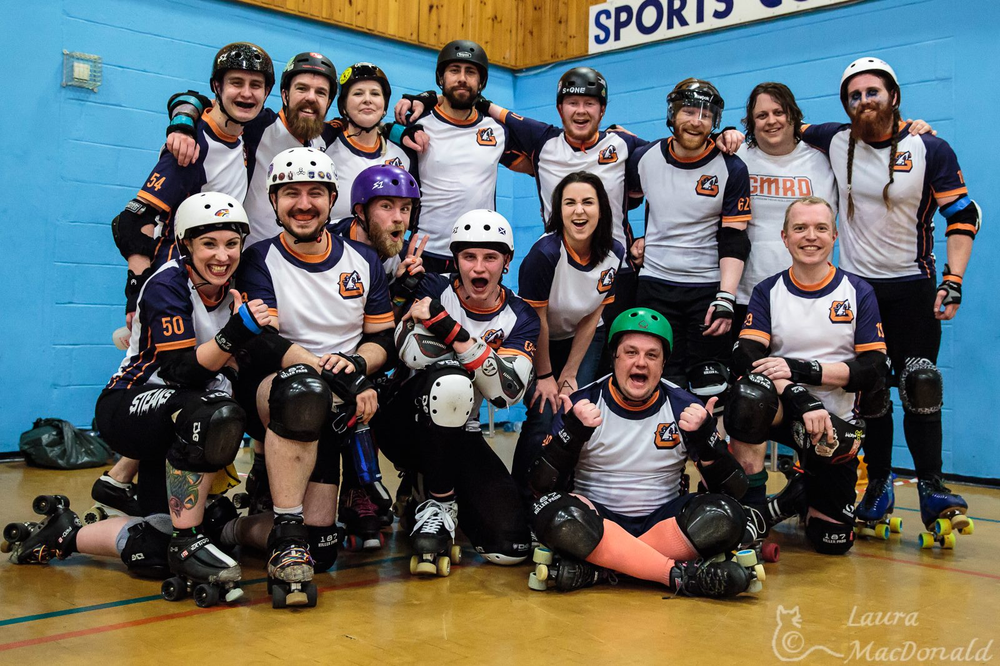

Glasgow ready to rock as British Champs T3 goes down to the wire
This Saturday, GMRD play host to the final fixtures in the British Championships' Men's Tier 3 - Regional North group (at Glasgow's ARC Sports Centre).
GMRD will be taking on their Celtic cousins, Men Behaving Derby (MBD), while Bairn City Rollers' Skelpies will be setting blasters to stun against Teesside Skate Invaders.
In a decidedly Scottish-type twist, only a specific combination of results can now see GMRD qualify for the play-offs.
For the uninitiated, here's the short story:
In April, GMRD travelled to Dublin to play the Skate Invaders, winning by 234 points to 167. GMRD were later denuded of victory due to an eligibility malfunction, with the score becoming 200-0 in favour of the Invaders.
GMRD's next game against the Skelpies was then forfeited by the Falkirk team due to lack of numbers - a 200-0 win in favour of GMRD - leaving the table looking like this:

Basically, GMRD need to beat MBD on Saturday - that's a pre-requisite if GMRD want a play-off place.
Regardless of what flavour that victory lollipop is, the Irn Brn need to be sucking on it by Saturday evening.
If the Skelpies win against the Invaders then victory of any variety will be enough for the Glasgow mob.
However, if the Invaders win and GMRD win then the three top teams will be tied on six points and it goes down to scores.
GMRD would need to have a better points differential than MBD to qualify for the play-offs.
Don't worry about crunching the numbers, SRD Blog has done it for you - GMRD need to beat MBD by over 123 points to be certain of a play-off place.
That isn't going to be any kind of easy as MBD have already beaten both the Skelpies and the Skate Invaders this season, the latter with just 6 players!
That's why Hugs & Kisses - GMRD's President - is sounding the rallying horn to the Irn Brn faithful.
"We need everyone in the West of Scotland and beyond to come out and support Saturday's double-header," he said.
 The Irn Brn - photo by Laura MacDonald
"This is an amazing first for our city - a British Champs men's game at the home of Glasgow derby, the ARC sportscentre.
"You are going to see two gallus games of roller derby, with the fate of three teams hanging in the balance.
"Come out and support the Irn Brn as we attempt the great escape. We're confident we can put on a great show - don't stop believing, ken?"
* Doors open at the ARC sportscentre, Glasgow, on Saturday (10 June) at 11.30am. Tickets cost £7. Click here for more information.
- Teeside Skate Invaders vs Bairn City Skelpies - first whistle at 11:45
- Glasgow Men's Roller Derby vs Men Behaving Derby - first whistle at 2pm